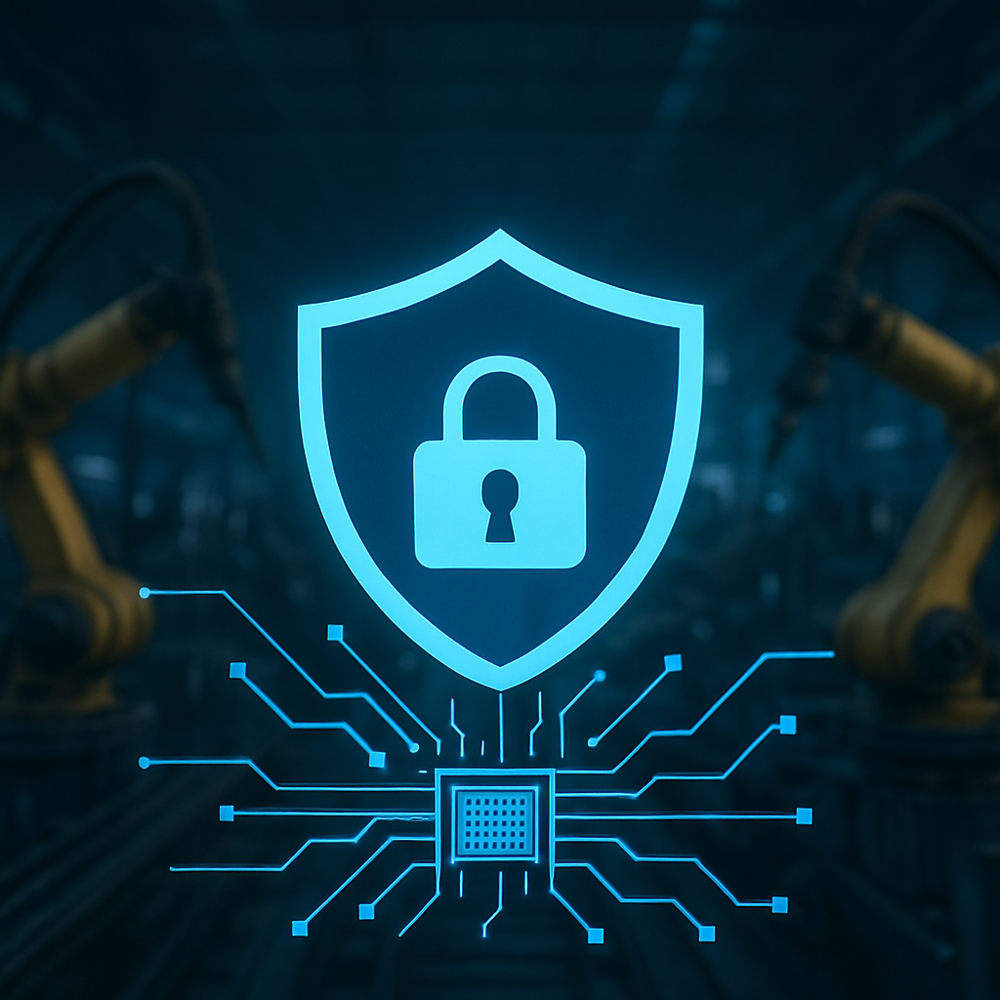

Les défis du RGPD à l’ère de l’industrie 4.0
De O.Abdelwahd · Publié le 11 juillet 2025

L’intégration croissante de l’IA, des capteurs et du cloud dans les chaînes de production
L’industrie connaît une transformation en profondeur, portée par des défis structurels et des opportunités technologiques inédites. Entre pénurie de main-d’œuvre, exigences de productivité toujours plus fortes et recherche de flexibilité, les industriels se tournent vers des solutions innovantes pour moderniser leurs chaînes de production.
Parmi ces solutions : la robotisation intelligente, l’automatisation des tâches répétitives, l’analyse des données en temps réel, et l’intégration croissante de technologies comme l’intelligence artificielle (IA), le cloud et les capteurs. Ces outils ne se contentent plus d’assister l’humain : ils prennent progressivement en charge des fonctions stratégiques, souvent de manière autonome.
L’exemple de Hyundai, Tesla ou BMW, qui a introduisent des robots intelligents dans Leurs lignes de production depuis plusieurs années, ou encore celui de Denso, qui a récemment annoncé le lancement d’un projet d’usine 100 % autonome, illustrent cette tendance. Cette dernière usine fonctionnerait sans intervention humaine, reposant entièrement sur l’interconnexion de capteurs, d’algorithmes d’IA, de caméras et de systèmes de gestion dans le cloud.
Cette autonomie repose sur la capacité des systèmes industriels à capter, collecter, traiter, apprendre, puis stocker d’immenses volumes de données. Données de performance, d’usure, de température, de vibration, de qualité de production… Ces flux d’information permettent un pilotage fin de l’ensemble de la chaîne,de la maintenance prédictive à l’optimisation logistique, en passant par la gestion en temps réel des flux de production.
Des données industrielles devenues stratégiques
Les IA embarquées permettent par exemple une réaction immédiate aux différents signaux — une température qui augmente légèrement, des vibrations inhabituelles, un cycle machine qui s’allonge. Grâce à ces signaux, les systèmes peuvent anticiper les pannes et lancer automatiquement des procédures de maintenance. De leur côté, les IA dans le cloud, plus puissantes et moins contraintes par le temps réel, analysent des volumes massifs d’historiques de production. Elles identifient des tendances, comparent les performances de plusieurs usines à travers le monde, et formulent des recommandations d’amélioration continue.
Au cœur de ces usines intelligentes, ce sont bien les données qui font fonctionner les systèmes d’IA, adaptent les processus en temps réel, et génèrent de la valeur.
Cette intelligence distribuée a donc un prix : la collecte massive de données industrielles. Capteurs, caméras, Lidar, microphones, jumeaux numériques… Les sources de données sont de plus en plus variées et nombreuses. Or, certaines de ces données sont particulièrement sensibles : informations sur les procédés de fabrication, données commerciales, données comportementales des opérateurs, images vidéo, données biométriques. Leur traitement soulève des questions cruciales : quelles garanties de sécurité ? Qui peut y accéder ? Comment sont-elles stockées ?
Dans un environnement où les machines, les usines et même les fournisseurs sont interconnectés, les risques liés à la cybersécurité, à la confidentialité et à la conformité légale deviennent centraux. C’est dans ce contexte que s’inscrivent les enjeux juridiques et éthiques du RGPD dans l’industrie automatisée.
Les enjeux juridiques et éthiques liés au RGPD dans l’industrie automatisée
L’essor de l’intelligence artificielle dans les environnements industriels transforme profondément la manière dont les entreprises collectent, traitent et exploitent les données. Toutefois, cette dynamique technologique soulève de vives interrogations juridiques, notamment à l’aune du Règlement général sur la protection des données (RGPD). Car si les usines intelligentes promettent efficacité, productivité et automatisation à grande échelle, elles manipulent aussi des volumes croissants de données à caractère personnel, parfois sensibles, qu’il s’agisse de vidéos de surveillance, de données biométriques collectées via des capteurs ou encore de profils comportementaux générés par des objets connectés.
Le RGPD, entré en vigueur en 2018, s’applique dès lors qu’un traitement concerne une personne identifiable, y compris dans un contexte professionnel. La neutralité technologique du texte fait qu’il englobe de plein droit les systèmes d’intelligence artificielle, dès lors qu’ils s’appuient sur des données personnelles, notamment à des fins de gestion des ressources humaines, de sécurité ou d’optimisation logistique. Ainsi, le simple fait de déployer des dispositifs de reconnaissance faciale dans un entrepôt ou d’utiliser des algorithmes pour noter la performance d’un employé place l’entreprise sous le régime du RGPD. Et c’est précisément cette articulation entre innovation technique et exigence juridique qui fait naître des tensions.
Les défis sont multiples. D’une part, les entreprises doivent composer avec le volume massif de données issues de capteurs, de machines et d’applications. D’autre part, ces données proviennent souvent de sources hétérogènes, voire incertaines en termes de licéité. À cela s’ajoute la difficulté croissante de comprendre les raisonnements des algorithmes utilisés, ce qu’on appelle couramment le problème de l’“opacité algorithmique”. Dès lors, respecter les principes du RGPD – notamment la transparence, la minimisation des données, la sécurité, la loyauté du traitement et la garantie des droits des personnes – devient un exercice délicat mais incontournable.
De nombreuses entreprises ont déjà été confrontées à ces exigences dans un contexte d’automatisation. Le cas de Clearview AI, sanctionnée par la CNIL française à hauteur de 20 millions d’euros, en est une illustration emblématique. Cette société américaine spécialisée dans la reconnaissance faciale avait massivement collecté des images sur internet sans consentement, les exploitant à travers des algorithmes capables d’identifier une personne à partir d’une simple photo. En plus d’avoir enfreint les obligations de transparence, Clearview avait procédé à un traitement de données biométriques sans base légale valable, ce qui constitue une violation manifeste du RGPD.
Mais les grands groupes ne sont pas les seuls concernés. Des plateformes telles qu’Uber ou Deliveroo ont également été épinglées, respectivement aux Pays-Bas, en France et en Italie, pour l’utilisation d’algorithmes de gestion du personnel jugés opaques. Dans le cas de Deliveroo, une amende de 2,5 millions d’euros a été prononcée par l’autorité italienne de protection des données en raison d’un système de notation des livreurs qui ne permettait ni contestation, ni compréhension des critères utilisés. Uber, de son côté, a été contraint de revoir les modalités d’information qu’elle offrait à ses chauffeurs à propos des décisions automatisées les affectant.
Même les administrations publiques ne sont pas à l’abri. Aux Pays-Bas, l'administration fiscale a été impliquée dans un scandale retentissant, lorsque l’un de ses algorithmes anti-fraude a discriminé des milliers de familles d’origine étrangère, les privant indûment d’allocations sociales. L’affaire a provoqué la démission du gouvernement néerlandais et mis en lumière les risques éthiques majeurs liés à l’utilisation d’IA dans la prise de décision publique.
Face à cette réalité, les entreprises industrielles sont tenues de déployer des dispositifs juridiques solides et des pratiques rigoureuses. Il ne s’agit plus simplement de garantir la sécurité informatique ou d’obtenir un consentement formel, mais bien d’adopter une véritable gouvernance des données personnelles. Cela implique notamment l’intégration du RGPD dès la conception des systèmes (approche dite de “Privacy by Design”), la cartographie complète des traitements de données opérés au sein de l’organisation, la nomination d’un Délégué à la protection des données (DPO), ainsi que la mise en place de mécanismes d’audit régulier des traitements, y compris lorsque ceux-ci sont assurés par des algorithmes apprenants.
Ce cadre juridique impose donc une révision en profondeur des pratiques de l’industrie connectée. L’IA, en tant que levier de transformation industrielle, ne peut plus être conçue comme une simple “boîte noire” technique. Elle doit devenir un objet de contrôle, d’explicabilité et de transparence, en dialogue constant avec les exigences de la régulation européenne. Loin d’être un frein à l’innovation, le RGPD s’affirme ici comme une boussole indispensable pour bâtir une automatisation éthique, durable et respectueuse des droits fondamentaux.
Vers une conciliation entre innovation industrielle et protection des données
Alors que l’intelligence artificielle s’impose progressivement dans l’industrie, la question de la protection des données personnelles devient un enjeu central. La transformation numérique des usines et des chaînes logistiques, portée par les promesses de l’IA, se heurte à la rigueur du cadre juridique européen, notamment le RGPD. Pourtant, de nombreuses initiatives montrent qu’il est possible de concilier innovation technologique et respect des droits fondamentaux.
Parmi les bonnes pratiques en plein essor, l’anonymisation et la pseudonymisation des données s’imposent comme des solutions de premier plan. L’anonymisation vise à supprimer toute possibilité d’identification, tandis que la pseudonymisation remplace les identifiants directs par des codes, permettant ainsi une exploitation des données sans exposer les personnes concernées. Ce type de traitement permet, par exemple, à une usine de surveiller les performances de ses robots collaboratifs ou l’efficacité de ses opérateurs sans violer leur vie privée. Le Cambridge Handbook of Responsible AI souligne l’importance de ces méthodes pour concilier innovation et conformité réglementaire.
Autre levier technique : l’edge computing. Cette approche consiste à traiter les données directement sur les machines ou à proximité des capteurs, plutôt que de les transférer vers le cloud. Elle offre un double avantage : réduction de la latence dans les prises de décision et limitation des risques liés à la centralisation des données personnelles. Des entreprises comme Siemens ou Schneider Electric ont déjà intégré ce principe dans certains de leurs systèmes industriels, minimisant ainsi la circulation inutile d’informations sensibles.
Mais au-delà des solutions techniques, l’approche réglementaire doit être intégrée dès la conception des systèmes. C’est le principe du Privacy by Design, inscrit dans le RGPD. Il impose que la protection des données ne soit pas un ajout a posteriori, mais un critère structurant dans le développement d’un outil ou d’un algorithme. Concrètement, cela implique par exemple de limiter par défaut la collecte de données, de prévoir des mécanismes de suppression automatique, ou encore d’assurer une traçabilité complète des traitements.
Dans cette logique, des audits réguliers des systèmes d’IA deviennent essentiels. L’objectif : vérifier que les algorithmes déployés ne produisent pas de biais discriminants, qu’ils respectent les droits des personnes, et que les données sont traitées dans le respect des finalités déclarées. Certaines startups spécialisées dans les audits algorithmiques, comme Zk Systems en Allemagne, accompagnent déjà les industriels dans cette démarche de conformité continue.
Pour que cette transformation soit durable, elle ne peut reposer uniquement sur les ingénieurs ou les directions techniques. Un dialogue accru entre les acteurs industriels, juridiques et technologiques est nécessaire. Cela suppose de former les ingénieurs aux notions juridiques, à commencer par les obligations du RGPD, mais aussi d’acculturer les juristes aux enjeux techniques de l’intelligence artificielle et des systèmes automatisés. Des initiatives comme le programme IA et Droit de l’École Polytechnique ou les formations CNIL à destination des DPO vont dans ce sens.
Les autorités de régulation, elles, jouent un rôle central dans l’accompagnement de cette transition. La CNIL, en France, multiplie les lignes directrices sur l’usage de l’IA, tout comme la Commission européenne, qui développe des cadres éthiques et réglementaires, à l’image du règlement sur l’intelligence artificielle (AI Act), récemment adopté. L’enjeu : ne pas freiner l’innovation, mais lui fournir un cadre robuste pour éviter les dérives.
Certaines entreprises industrielles montrent déjà qu’il est possible de conjuguer performance technologique et conformité. C’est le cas de Bosch, qui a mis en place une charte éthique sur l’IA et s’engage à respecter les principes de transparence et de non-discrimination dans tous ses développements. Le groupe développe également des solutions de maintenance prédictive en usine en veillant à ce que les données soient pseudonymisées et traitées localement. De son côté, Airbus a intégré un cadre de gouvernance interne des données et des algorithmes, incluant des revues régulières de conformité RGPD pour ses systèmes d’optimisation industrielle.
En somme, loin d’être antagonistes, innovation et protection des données peuvent se renforcer mutuellement. En intégrant les principes du RGPD dès la conception des systèmes, en dialoguant entre métiers, et en s’appuyant sur des solutions technologiques respectueuses de la vie privée, l’industrie européenne peut réussir le pari d’une intelligence artificielle à la fois performante, responsable et digne de confiance.